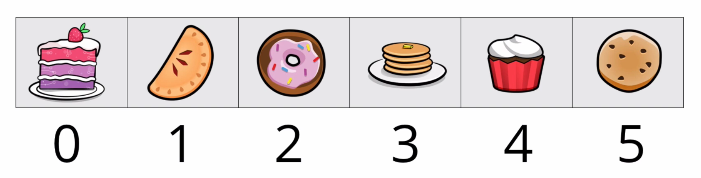

12 Lists¶
Need to go shopping? Make a shopping list so you don’t forget what to buy. Have a bunch of tasks to finish? Make a to-do list. Lists are a part of everyday life. They’re also an important part of programming.
In almost every application you make, you’ll deal with data collections. List is the primary collection type you’ll work with in Dart. A list is ideal for storing many objects of the same type in an ordered way. Lists in Dart are like what other languages call arrays.
The image below represents a list with six elements. Lists are zero-based, so the first element is at index 0. The value of the first element is “cake”, the value of the second element is “pie” and so on until the last element at index 5, which is “cookie”.

The order of a list matters. Pie comes after cake but before donut. If you loop through the list multiple times, you can be sure the elements will stay in the same location and order.
Basic List Operations¶
Like a good dessert, Dart lists have a lot of goodness baked right in. In the next few sections, you’ll learn how to create lists, modify them and access their elements.
Creating a List¶
You can create a list by specifying its initial elements in square brackets. This is called a list literal.
Write the following line in main:
var desserts = ['cookies', 'cupcakes', 'donuts', 'pie'];
Because all the elements in this list are strings, Dart infers this to be a list of Stringtypes.
You can reassign desserts (but why would one ever want to reassign desserts?) with an empty list like so:
desserts = [];
Dart still knows that desserts is a list of strings. However, if you were to initialize a new, empty list like this:
var snacks = [];
Dart wouldn’t have enough information to know what kind of objects the list should hold. In this case, Dart simply infers it to be a list of dynamic. This causes you to lose type safety, which you don’t want. If you’re starting with an empty list, specify the type like so:
List<String> snacks = [];
List is the data type, or class name, as you learned in Chapter 8, “Classes”.
The < > angle brackets here are the notation for generic types in Dart. A generic list means you can have a list of anything; you just put the type you want inside the angle brackets. In this case, you have a list of strings, but you could replace String with any other type. For example, List<int> would make a list of integers, List<bool> would make a list of Booleans and List<Grievance> would make a list of grievances — but you’d have to define that type yourself because Dart doesn’t come with any by default.
Note
There’s a whole chapter on generic types in Dart Apprentice: Beyond the Basics.
A slightly nicer syntax for creating an empty list is to use var or final and move the generic type to the right:
var snacks = <String>[];
Dart still has all the information it needs to know this is an empty list of type String.
Printing Lists¶
As you can do with any collection, you can print the contents of a list with a printstatement. Because desserts is currently empty, give it a list with elements again so you have something interesting to show when you print it:
desserts = ['cookies', 'cupcakes', 'donuts', 'pie'];
print(desserts);
Run that, and you’ll see the following:
[cookies, cupcakes, donuts, pie]
Accessing Elements¶
To access a list’s elements, you reference its index via subscript notation, where the index number goes in square brackets after the list name.
final secondElement = desserts[1];
print(secondElement);
Don’t forget that lists are zero-based, so index 1 fetches the second element. Run that code, and you’ll see cupcakes as expected.
If you know the value but don’t know the index, you can use indexOf to look it up:
final index = desserts.indexOf('pie');
final value = desserts[index];
print('The value at index $index is $value.');
Because 'pie' is the fourth item in the zero-based list, index is 3 and value is pie. Verify that by running the code above:
The value at index 3 is pie.
Assigning Values to List Elements¶
You can change the value of a list element the same way you access its value — that is, by using subscript notation:
desserts[1] = 'cake';
print(desserts);
This changes the value at index 1 from cupcakes to cake. Run the code to see the difference:
[cookies, cake, donuts, pie]
Adding Elements to the End of a List¶
Lists are expandable by default in Dart, so you can use the add method to add an element.
desserts.add('brownies');
print(desserts);
This adds brownies to the end of the list.
Run that, and you’ll see:
[cookies, cake, donuts, pie, brownies]
Now, desserts has five elements, ending with brownies.
Inserting Elements¶
Sometimes you want to add an element somewhere besides the end of the list. You can accomplish this with the insert method.
Write the following code at the bottom of main:
desserts.insert(1, 'ice cream');
print(desserts);
This inserts ice cream at index 1, the second position in the zero-based list. All the elements after ice cream move back one index position.
Run your code, and you’ll see the following result in the terminal:
[cookies, ice cream, cake, donuts, pie, brownies]
Removing Elements¶
You can remove elements from a list using the remove method. So if you’d gotten a little hungry and eaten the cake, you’d write:
desserts.remove('cake');
print(desserts);
This leaves a list with five elements:
[cookies, ice cream, donuts, pie, brownies]
If you know the index of the element you want to remove, use removeAt. Write the following below your other code:
desserts.removeAt(0);
print(desserts);
The cookies were at index 0, so they’re gone now, too:
[ice cream, donuts, pie, brownies]
No worries — there’s still plenty of dessert for a midnight snack tonight!
Note
When you remove an item from the beginning or middle of a list, Dart must internally move up by one index all the elements that occur after it. Think of this as standing in a line. When the person at the front of the line leaves, everyone behind them moves up. Similar moving occurs when you insert in a list. It can harm performance if you need to do frequent insertions or removals near the beginning of a large list. In a case like this, you might consider using a different data structure, such as a linked list, which has good insertion and removal performance anywhere in the list. Read Data Structures and Algorithms in Dart if you’d like to learn more.
Sorting Lists¶
Having order in your life makes things easier. The same is often true for lists. For example, it’s easier to tell what the largest or smallest numbers are if you sort the list first. The easiest way to sort a list in Dart is through the sort method.
Write the following in main:
final integers = [32, 73, 2, 343, 7, 10, 1];
integers.sort();
print(integers);
You begin here with an unsorted list of integers. Calling sort doesn’t create a new list but sorts the original list in place.
Observe that by running the code above:
[1, 2, 7, 10, 32, 73, 343]
Now, you can easily find the smallest and largest integers like so:
final smallest = integers[0];
print(smallest); // 1
final lastIndex = integers.length - 1;
final largest = integers[lastIndex];
print(largest); // 343
The sort method even works on strings:
final animals = ['zebra', 'dog', 'alligator', 'cat'];
animals.sort();
print(animals);
Run that, and you’ll get the expected results:
[alligator, cat, dog, zebra]
By default, sort sorts strings alphabetically and numbers from smallest to largest. You can also sort in other ways if you provide a custom sorting function as the optional parameter to sort. However, you might want to read Dart Apprentice: Beyond the Basics, Chapter 2, “Anonymous Functions”, first to get a better idea of how these function parameters work.
Exercise¶
- Create a list of type
Stringand name itmonths. - Use the
addmethod to add the names of the twelve months. - Find the index of March in the list.
- Use the index to remove March.
- Insert March back in at the correct position.
- Print the list after each change to ensure your code is correct.
Mutable and Immutable Lists¶
In the examples above, you were able to reassign list literals to desserts like so:
var desserts = ['cookies', 'cupcakes', 'donuts', 'pie'];
desserts = [];
desserts = ['cookies', 'cupcakes', 'donuts', 'pie'];
You could do this because you defined desserts using the var keyword. This has nothing to do with the list itself being immutable or not. It only means you can swap out different lists in desserts.
Now, try the following using final:
final desserts = ['cookies', 'cupcakes', 'donuts', 'pie'];
desserts = []; // not allowed
desserts = ['cake', 'ice cream']; // not allowed
desserts = someOtherList; // not allowed
Unlike var, using final means you’re not allowed to use the = assignment operator to give desserts a new list.
However, look at this:
final desserts = ['cookies', 'cupcakes', 'donuts', 'pie'];
desserts.remove('cookies'); // OK
desserts.remove('cupcakes'); // OK
desserts.add('ice cream'); // OK
Obviously, the final keyword isn’t keeping you from changing the list’s contents. What’s happening? Perhaps a little story will help.
The House on Wenderlich Way¶
You live in a house at 321 Lonely Lane. All you have at home are a few brownies, which you munch on as you scour the internet in hopes of finding work. Finally, you get a job as a junior Flutter developer, so you buy a new house at 122 Wenderlich Way. Best of all, your neighbor Ray brings over some cookies, cupcakes, donuts and pie as a housewarming gift! The brownies are still at your old place, but in your excitement about the move, you’ve forgotten all about them.
Using var is like giving you permission to move houses. The first house had brownies. The second house had cookies, cupcakes, donuts and pie: different houses, different desserts.
Using final, on the other hand, is like saying, “Here’s your house, but this is the last place you can ever live.” However, living at a fixed location doesn’t mean you can’t change what’s inside the house. You might live permanently at 122 Wenderlich Way, but it’s fine to eat all the cookies and cupcakes in the house and then go to the store and bring home some ice cream. Well, it’s fine in that it’s permissible, but maybe you should pace yourself a little on the sweets.
So, too, with a final list. Even though the memory address is constant, the values at that address are mutable.
Mutable data is nice and all, but it’s not so pleasant when you open your cupboard expecting to find donuts but instead discover the neighbor kids traded them for slugs. It’s the same with lists — sometimes you just don’t want to be surprised.
So how do you get an immutable list? Have you already guessed the answer? Good job if you have!
Creating Deeply Immutable Lists¶
The solution to creating an immutable list is to mark the variable name with the constkeyword. This forces the list to be deeply immutable, meaning every element of the list must also be a compile-time constant.
Const Variables¶
Replace the body of main with the following example:
const desserts = ['cookies', 'cupcakes', 'donuts', 'pie'];
desserts.add('brownie'); // not allowed
desserts.remove('pie'); // not allowed
desserts[0] = 'fudge'; // not allowed
Because const precedes desserts in the example above, you can’t add to, remove from or update the list. It would be nice if VS Code would tell you immediately that you’re not allowed to do that. But unfortunately, modifying an unmodifiable list will cause a runtime error — not a compile-time error.
Run the code above, and you’ll see the following message:
UnsupportedError (Unsupported operation: Cannot add to an unmodifiable list)
Press the Stop button in VS Code to cancel the error and exit your program execution:
Const List Literals¶
If you’re not able to use const for the variable itself, you can still make the value deeply immutable by adding the optional const keyword before the list literal:
final desserts = const ['cookies', 'cupcakes', 'donuts', 'pie'];
Such a situation occurs when providing a default value to a final field in a class, as in the following example:
class Desserts {
Desserts([this.desserts = const ['cookies']]);
final List<String> desserts;
}
desserts is final, while the default value is a const list literal. This ensures no one can change the contents of the default list. Recall from Chapter 8, “Classes”, that const values are canonical instances, so there’s a performance benefit in addition to the immutability benefit.
Unmodifiable Lists¶
Finally, if you want an immutable list but won’t know the element values until runtime, you can create a list with the List.unmodifiable named constructor:
final modifiableList = [DateTime.now(), DateTime.now()];
final unmodifiableList = List.unmodifiable(modifiableList);
DateTime.now() returns the date and time when it’s called. You’re not going to know that until runtime, which prevents the list from taking const. However, passing that list into List.unmodifiable makes the new list immutable.
That’s enough about mutability for now. Next, you’ll see some properties you can access on lists.
List Properties¶
Collections such as List have several properties. To demonstrate them, use the following list of drinks:
const drinks = ['water', 'milk', 'juice', 'soda'];
Accessing First and Last Elements¶
Access the first and last element in a list with first and last:
drinks.first // water
drinks.last // soda
This is equivalent to using the first and last index:
drinks[0] // water
drinks[drinks.length - 1] // soda
Checking If a List Contains Any Elements¶
You can also check whether a list is empty or not.
drinks.isEmpty // false
drinks.isNotEmpty // true
This is equivalent to the following:
drinks.length == 0 // false
drinks.length > 0 // true
However, it’s more readable to use isEmpty and isNotEmpty.
Looping Over the Elements of a List¶
When you have a collection like a list, you often need to perform some action on or with each list element. As you learned in Chapter 5, “Control Flow”, loops are a great way to perform a repeated task.
Using a For Loop¶
To perform an action on each list element using a for loop, you’ll need to combine your knowledge of loops with what you learned about using an index to access the list elements.
Replace the contents of main with the following code:
const desserts = ['cookies', 'cupcakes', 'donuts', 'pie'];
for (int i = 0; i < desserts.length; i++) {
final item = desserts[i];
print('I like $item.');
}
Pay attention to the following points of interest:
- Lists are zero-based, so you begin at index
0. desserts.lengthtells you how many elements are in the list,4in this case. You continue iterating as long as indexiis less than4because the index of the last index is3.desserts[i]gives you the value of the current element.
Run the code above, and you’ll see the following lines printed in the output window:
I like cookies.
I like cupcakes.
I like donuts.
I like pie.
Using a For-In Loop¶
It’s such a common activity to iterate over the elements of a collection that Dart provides a special loop precisely for this purpose. It’s called a for-in loop. These loops don’t have any sort of index or counter variable associated with them, but they make iterating over a collection convenient.
Add the following code below what you wrote earlier:
for (final item in desserts) {
print('I also like $item!');
}
This is much more readable, isn’t it? The in keyword tells the for-in loop to iterate over the collection in order, and on each iteration, to assign the current element to the item variable. Because desserts is a collection of strings, item is inferred to be of type String.
Rerun your code, and you’ll see the following result:
I also like cookies!
I also like cupcakes!
I also like donuts!
I also like pie!
Exercise¶
Start with the following list of numbers:
const numbers = [1, 2, 4, 7];
Print the square of each number: 1, 4, 16 and 49.
- First, use a
forloop. - Solve the problem again using a
for-inloop.
Code as UI¶
The Flutter framework chose Dart because of its unique characteristics. However, Flutter has also influenced the development of Dart. You can see this with the following additions to the Dart language:
- spread operator.
- collection
if. - collection
for.
They make it easier for Flutter developers to compose user interface layouts completely in code without a separate markup language.
Flutter UI code consists of classes called widgets. Three common Flutter widgets are rows, columns and stacks, all of which store their children as List collections. Being able to manipulate lists using the spread operator, collection if and collection formakes it easier to build the UI with code.
The examples below use strings, but in a Flutter app, you would see the same pattern with lists of Text, Icon, ElevatedButton and other Widget elements.
Spread Operator (...)¶
You can combine lists in a few ways. Start by creating the following two lists so you have something to work with:
const pastries = ['cookies', 'croissants'];
const candy = ['Junior Mints', 'Twizzlers', 'M&Ms'];
One way to combine lists is with the addAll method. Write the following code below the two lists you just made:
final desserts = ['donuts'];
desserts.addAll(pastries);
desserts.addAll(candy);
print(desserts);
This first adds all the elements in pastries to desserts and then adds all the elements in candy to desserts.
Run the code to show that’s true:
[donuts, cookies, croissants, Junior Mints, Twizzlers, M&Ms]
Although the above method works fine in normal program execution, it doesn’t fit so well with Flutter’s code-as-UI style. This is where the spread operator (...) comes in. This operator expands one list into another.
Replace the code block above with the following version:
const desserts = ['donuts', ...pastries, ...candy];
The ... operator takes the elements of pastries and candy and adds them directly to desserts without needing to call any additional methods.
This is much more concise, and if you add a comma after candy, you can format the list vertically in typical Flutter fashion:
const desserts = [
'donuts',
...pastries,
...candy,
];
Print desserts, and you’ll find you have the same results as you did with addAll:
[donuts, cookies, croissants, Junior Mints, Twizzlers, M&Ms]
Collection if¶
When creating a list, you can use a collection if to determine whether to include a particular element.
If you had a peanut allergy, for example, you’d want to avoid adding certain candy with peanut butter to a list of candy. Express that with the following code:
const peanutAllergy = true;
const sensitiveCandy = [
'Junior Mints',
'Twizzlers',
if (!peanutAllergy) 'Reeses',
];
print(sensitiveCandy);
Run that, and you’ll see that the false condition for the collection if prevented Reeses from being included in the list:
[Junior Mints, Twizzlers]
Collection for¶
There’s also a collection for, which you can use within a list to generate elements based on another list.
Add the following code at the bottom of main:
const deserts = ['gobi', 'sahara', 'arctic'];
var bigDeserts = [
'ARABIAN',
for (var desert in deserts) desert.toUpperCase(),
];
print(bigDeserts);
Here, you’ve created a new list where the final three elements are the uppercase version of the elements from the input list. The syntax is much like a for-in loop but without the braces.
Run the code to see:
[ARABIAN, GOBI, SAHARA, ARCTIC]
In Flutter, you might use the collection for to convert a list of strings into Textwidgets.
Handling Nullable Lists¶
Thus far in this chapter, you haven’t had to worry about nullable values. You’ll need to consider them, though.
Nullable Lists vs. Nullable Elements¶
A few possibilities exist when dealing with null values and lists. Either the list itself could be null, or the values within the list could be null.
Nullable Lists¶
For example, you might have a list where the list itself is null. Here’s what that would look like:
List<int>? nullableList = [2, 4, 3, 7];
nullableList = null;
For the nullable list, you add the ? after the angle brackets. That makes it apply to the list, so in effect, you have List?. Note that within the angle brackets, you have intand not int?. As long as the list exists, its elements must also have non-null values.
Nullable Elements¶
In contrast to that, you might have a list where one or more of the elements are null:
List<int?> nullableElements = [2, 4, null, 3, 7];
Dart indicates that by marking the type within the angle brackets as nullable — int? in this case. List itself isn’t nullable.
Nullable Lists With Nullable Elements¶
Finally, you can also have a nullable list with nullable elements:
List<int?>? nullableListAndElements = [2, 4, null, 3, 7];
nullableListAndElements = null;
List<int?>? is the combination of List? and int?.
Using the Basic Null-Aware Operators¶
Everything you learned in Chapter 11, “Nullability”, applies to handling nullable lists or nullable elements.
Write the following example in main:
List<String?>? drinks = ['milk', 'water', null, 'soda'];
// 1
for (String? drink in drinks) {
// 2
int letters = drink?.length ?? 0;
print(letters);
}
The following explanations apply to the numbered comments:
- Although the list is nullable, Dart uses flow analysis to see that you’ve given the list a value. Dart then applies type promotion so you can loop through the elements without doing additional null checks. Here, the type for
drinkis explicitly written asString?for clarity, but Dart could use type inference to learn the same thing if you had writtenfinal drink in drinks. - Because an element may be null, you use the
.?null-aware access operator to getlengthand the??if-null operator to provide a default value in case of a null.
Run that, and you’ll see the following output for the number of letters in every word:
4
5
0
4
Using Null-Aware Collection Operators¶
In addition to the standard ways of handling null that you’ve learned, two operators apply specifically to lists:
?[]: Null-aware index operator....?: Null-aware spread operator.
The following two sections will introduce these.
Null-Aware Index Operator (?[])¶
The null-aware index operator (?[]) is used to access a list’s elements when the list itself might be null.
Take the following example of a nullable list:
List<String>? myDesserts = ['cake', 'pie'];
Here, myDesserts isn’t null because you assigned it the value ['cake', 'pie'].
Now, set myDesserts to null:
myDesserts = null;
Try to get the value of one of the items in the list:
String? dessertToday = myDesserts?[1];
Print dessertToday, and you’ll see null.
If you had tried to retrieve a value from a null list in the days before null safety, you would have crashed your app. However, the ?[] operator gracefully passes a null value on to dessertToday.
Null-Aware Spread Operator (…?)¶
There’s also a null-aware spread operator (...?), which will omit a list if the list itself is null.
Write the following in main:
List<String>? coffees;
final hotDrinks = ['milk tea', ...?coffees];
print(hotDrinks);
Here, coffees hasn’t been initialized and therefore is null. By using the ...?operator, you avoid an error that would come by trying to add a null list. The list hotDrinks will only include milk tea.
Run your code to check that:
[milk tea]
This completes your study of lists for now. In the next chapter, you’ll learn about another type of collection called a set.
Challenges¶
Before moving on, here are some challenges to test your knowledge of lists. It’s best to try to solve them yourself, but solutions are available with the supplementary materials for this book if you get stuck.
Challenge 1: Longest and Shortest¶
Given the following list:
const strings = ['cookies', 'ice cream', 'cake', 'donuts', 'pie', 'brownies'];
Find the longest and shortest strings.
Challenge 2: Repetitious Repeats¶
How can you tell if a list contains duplicates?
Use the following list as an example:
final myList = [1, 4, 2, 7, 3, 4, 9];
Challenge 3: Sorting it All Out¶
Write an algorithm to sort a list of integers without using the sort method. If you need some help, search online for “bubble sort” and then implement that algorithm in Dart.
Key Points¶
- Lists store an ordered collection of elements.
- List elements are accessible using a zero-based index.
- The elements of a list are mutable by default.
- The
for-inloop is a convenient way to iterate over the elements of a list. - The spread operator (
...) allows you to expand one list inside another. - Collection
ifandforcan be used to create the content of a list dynamically. - The nullable collection operators
?[]and...?provide additional ways of dealing with nullable lists.
Where to Go From Here?¶
You saw in the “Creating Deeply Immutable Lists” section above that if you try to modify an immutable list, you won’t discover your mistake until after you run your program. Runtime mistakes are more difficult to track down. A good practice is to write tests to ensure your code works as intended. Do a web search for “unit testing” and “test driven development” to learn more. Dart has strong support for testing with the testpackage on pub.dev.